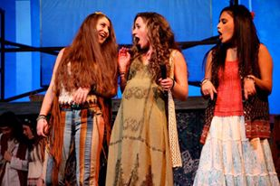
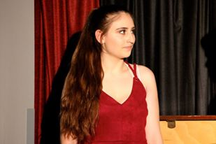
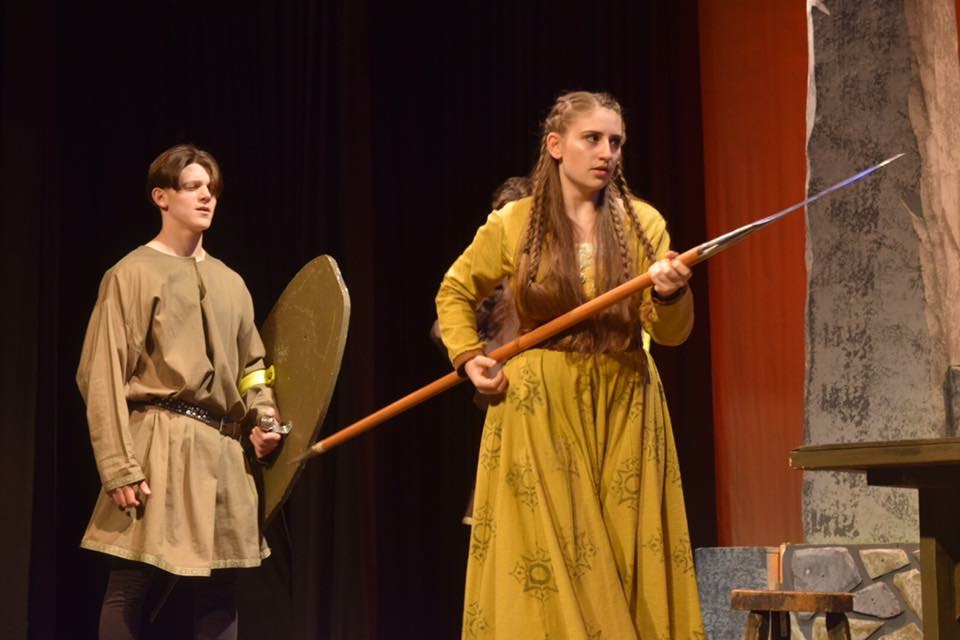
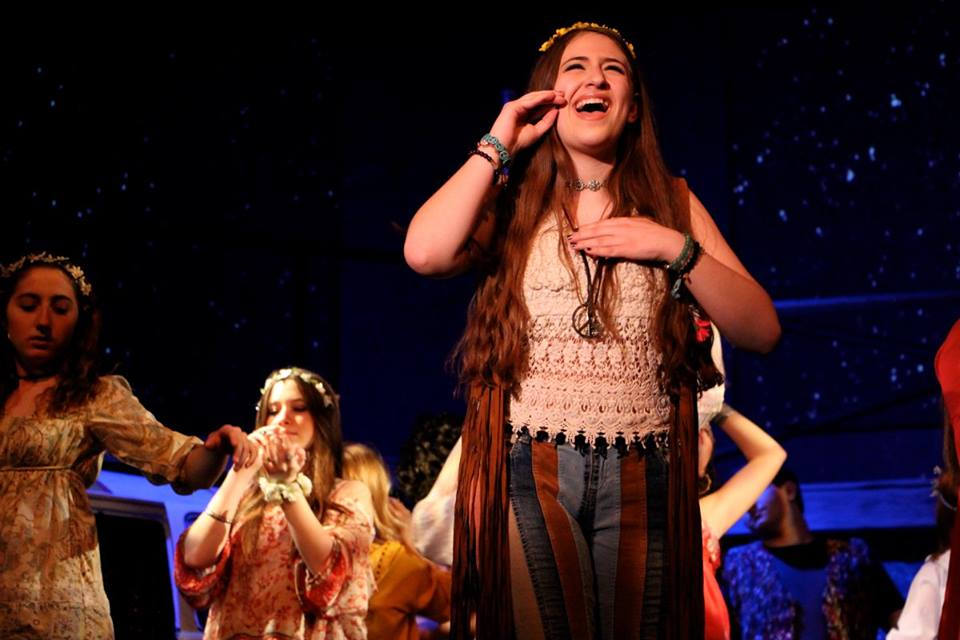

Theatre and Music

Rebekah performs in plays, musicals and concerts at her high school. Also, she sings in her school's female a capella group called The Adelettes. This past year, she also won a competition for directing her one-act play called "The Audition." Rebekah tried out technical theater for the first time, working backstage on run crew for "The Complete Works of William Shakespeare (Abridged)." She ended 11th grade as the lead in "A Feminine Ending" at her school. This year, she is leading her school's theater club, the Association of Creative Thespians, as the vice president. Duties for this role include advertising, designing and coordinating club apparel, poster and commercial design, as well as managing social media. Rebekah was also cast as one of the leads in the fall drama, "I Never Saw Another Butterfly." Additionally, she participates in numerous showcases and small performances throughout the year. She is also currently directing "Godspell" for an independent study in her school. In her school's Chamber Choir, she was also able to perform at St. Patrick's Cathedral in New York City.



